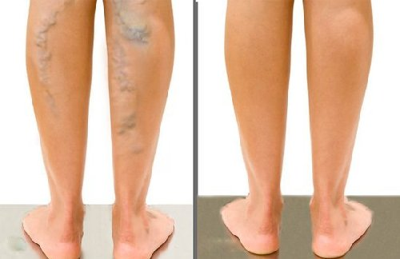
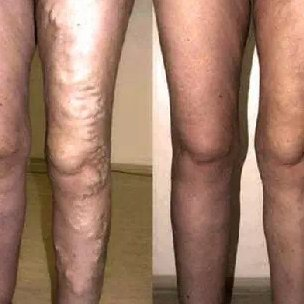

V myslích obyvatel se normálně upevnil názor, že zbavit se
křečových žil bez chirurgického zákroku a během krátké doby není možné. I
když se toto tvrzení ve skutečnosti stalo irelevantním již v roce 2000, mnozí stále
věří, že tomu tak je.
Ve skutečnosti však věda nestojí na místě, zejména v oblasti flebologie
(vědy, která studuje strukturu, funkci a patologii cév). Jedním z posledních
světových objevů je gel, který pomáhá zbavit se příznaků křečových žil
. Je uznáván odborníky jako nejlepší prostředek, který
pomáhá eliminovat křečové žíly. Inovativní produkt pomůže
normalizovat krevní oběh, zabránit vzniku cévních hvězdiček, je schopen zajistit
účinné komplexní odstranění příznaků křečových žil doma po dobu 1 měsíce.
Příznaky křečových žíl
Abnormálně rozšířené kapiláry
Oteklé a vypouklé krevní cévy
Vyrážka
Svědění a tíha nohou
vlastnosti
Pomáhá zmírnit otoky a bolest
Pomáhá snížit abnormální dilataci
kapilár
Stimuluje krevní oběh
Pomáhá vyhladit a hydratovat pokožku
Při pravidelném používání pomůže :
Zmírnit bolest a otoky, obnovit přirozený průtok krve.
Snižit bolest a minimalizovat riziko krevních sraženin.
Zlepšit stav cév, vrátit jim elasticitu.
Redakce "Hello Health" se dotazovala odborníky s dlouholetými
zkušenostmi v oblasti flebologie. Všichni říkali totéž: důrazně doporučují svým
pacientům.
Václav Kopeček, odborník na fleborogii (pracovní zkušenost
více než 30 let). V mé praxi bylo dříve několik případů operovaných
pacientů. Obvykle se vyskytuje ve třetím nebo čtvrtém stádiu křečových žil. Přesto vznik
gelu zásadně změnil situaci.
Tento pozoruhodný produkt může pomoci jak v raných fázích vzniku
křečových žil, tak v těžkých případech, kdy se zdá, že bez operace již není
možné. Nyní doporučuji operaci pouze ve velmi obtížných případech a doporučuji
nejprve zkusit problém vyřešit pomocí tohoto gelu.
je bezpochyby nejlepší produkt pro odstranění příznaků
křečových žil a prevenci jejích výskytu doma.
Zde jsou výsledky před a po 1 měsíci používání tohoto
gelu:

Monika Horská, odbornice na cévní zdraví (pracovní
zkušenost více než 11 let). Nepochybně jedna z předností je jeho
složení. Tento gel obsahuje jedinečné přírodní složky, které účinně
pomáhají eliminovat příčiny křečových žil.
Chci zdůraznit, že díky velkému množství flavonoidů, tříslovin a
vitamínů obsažených v extraktu z kaštanu gel přispívá ke zvýšení tonusu
kapilár a normalizaci krevního oběhu.
Účinek po použití tohoto gelu je úžasný. Věřím, že je
revoluční produkt, který zásadně mění přístup k odstranění křečových žil a
umožňuje obejít se bez bolestivých a nákladných operací. Tento gel mohou
používat lidé všech věkových kategorií!
Jan Borovský, přední odborník na flebologii (pracovní
zkušenost více než 30 let). Pro pomoc s křečovými žilami velmi doporučuji
používat . Tento gel si snadno poradí i se složitými případy,
zmírní stav pacientů se třetím a čtvrtým stupněm. Pomáhá eliminovat
příčinu křečových žil, nejen příznaky.
Doporučuji také používat tento gel preventivně, abyste v budoucnu určitě
zabránili vzniku křečových žil.
V mé praxi bylo mnoho případů, kdy pomohl při závažných
případech křečových žil. Zde je například:
Křečové žily: nebezpečí v číslech
Účinnost používání v číslech
80%Žen
mají příznaky chronické žilní nedostatečnosti
100%Necítí
bolest ani únavu nohou
20%Lidí trpící křečovými žilami jsou nuceni podstoupit
nebezpečnou operaci
97%Všimli
si odstranění cévní sítě.
65%Mají zvýšené riziko křečových žil, zvláště pokud se
v rodině vyskytly případy křečových žil
96%Normalizuje se
činnost oběhového systému.
70%Těhotných žen trpí křečovými žilami
100%Nezaznamenali
žádné vedlejší účinky.
90%Žen,
které nosí podpatky vyšší než 8 centimetrů, trpí bolestmi nohou alespoň jednou
týdně
95%Zmizely vyčnívající a zanícené
žíly.
100% efektivní produkt
Gel je certifikován na území EU a schválen pro použití
v zemích Evropy. Zlepšení pocítíte již po 1 měsíci používání
! Stojí za to vyzkoušet!
Karel, 45 let
Nohy byly namodralé, měl jsem oteklé žíly. Přestal jsem dělat
činku, ale problém nikam neodešel. Prý pomůže jen operace. Ale gel vyřešil
otázku do měsíce! Nohy jsou opět normální barvy.

Anna, 35 let
Gel aplikuji pravidelně večer po práci. Rychle zmírňuje
otoky a únavu, také výrazně snižuje pocení nohou. Ráno cítím, že nohy
jsou jako nové. Doporučuji všem
Julie, 38 let
Gel je pro mě opravdovou spásou. Používám ho denně.
Doslova po několika týdnech od začátku používání jsem si všimla
viditelného poklesu vyčnívajících cév, nohy začaly vypadat lépe,
cítím lehkost a energii i ve večerních hodinách
Marie, 38 let
Na nohách jsem měla hodně nateklé žíly. Na konzultaci mi
řekli, že je lze odstranit pouze chirurgicky. Nechtěla jsem podstoupit operaci. Nechtěla jsem mít
jizvy na nohou. Rozhodla jsem se vyzkoušet gel , po 3 týdnech používání
zmizely bolesti a otoky nohou. Další týden se oteklé žíly skoro zmizely.
Romana, 41 let
Několik let jsem trpěla křečovými žilami pod koleny. Žíly tam
neustále svědily, někdy bolely. Loni jsem si všimla, že se mi začaly zvětšovat žíly. A tak
jsem se rozhodla něco udělat. Šla jsem za odborníkem a ten mi poradil, abych zkusila . Bylo
to neuvěřitelné, ale viděla jsem rozdíl již v prvním týdnu používání
tohoto gelu. Svědění a bolesti zmizely téměř okamžitě. A po dvou týdnech jsem si všimla,
že žíly pod koleny téměř zmizely.
Anna, 36 let
Mám křečové žíly po těhotenství. Krém, který
mi doporučili v lékárně, mi dal jen dočasný účinek. Kompresní punčochy byly
příliš těsné, nebylo možné v nich chodit. Abych byla upřímná, málem jsem
to vzdala a málem jsem se rozhodla jít na operaci, ale náhodou jsem si přečetla o
a koupila jsem si ho. Výsledek mě překvapil: žilní uzliny na nohou téměř
zmizely. Teď jsou moje nohy zase tak krásné jako dřív! Opět mohu nosit krátké
sukně!
Natálie, 67 let.
Mám křečové žíly dědičně. Celý život jsem tím
trpěla. V mládí to mě moc netrápilo a s přibývajícím věkem se to zhoršilo:
žíly hoří ohněm, zvláště pokud jsem celý den na nohou nebo nosím těžké
tašky. Moje dcera mi nedávno koupila a ten gel mě zachránil! Nikdy jsem si nemyslela,
že se tak rychle zbavím problému, který mě trápil celý život.
Používám tento gel během posledních 6 měsíců a zapomněla jsem na problémy s
žilami.
ČASTO KLADENÉ OTÁZKY
Jaké mohou být vedlejší účinky? +
Gel se skládá z přírodních složek,
neobsahuje parabeny, barviva, syntetické příchutě a GMO produkty. Výrobek prošel
certifikací a nemá žádné kontraindikace. Nezpůsobuje alergie a vedlejší
účinky.
Jak dlouho by se gel měl používat? +
Délka kurzu přímo závisí na stadiu křečových
žil. Obvykle po 1,5-2 týdnech jsou již patrné první výsledky použití gelu.
Kde to mohu koupit? +
Naše společnost je jediným oficiálním dodavatelem
krému na území Evropské unie. Objednávku lze provést
prostřednictvím tohoto webu. Kupte si pouze originální produkt !